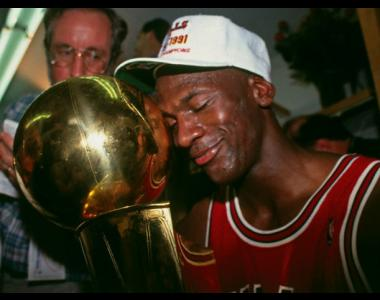
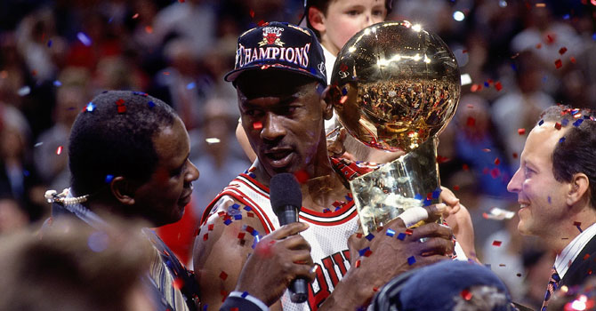
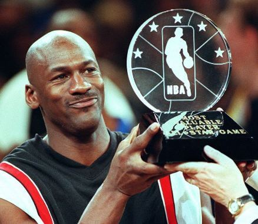
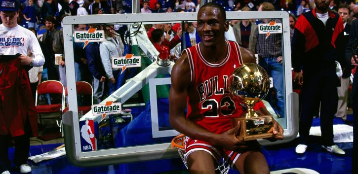
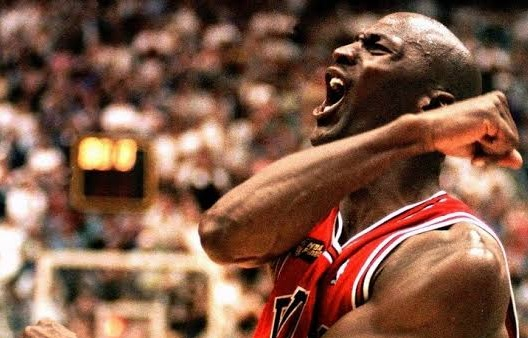
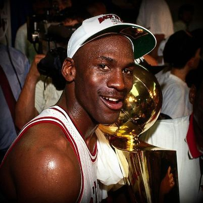

Los Records De Michael Jordan
Récords
- Más títulos de máximo anotador (10)
- Mayor promedio anotador en una carrera de la historia (30,1)
- Mayor promedio anotador en una carrera de la historia en eliminatorias (33,4)
- Más partidos consecutivos anotando en dobles dígitos (842)
- Mayor promedio anotador en unas finales (40,1 en 1993)
- Más MVP de las Finales (6)
- Anotación más alta en un partido de playoffs (63 puntos, el 20 de abril de 1986)
Logros
- Anotó 40 o más puntos en 211 partidos (173 temporada regular, 38 playoffs)
- Anotó 50 o más puntos en 39 partidos (31 temporada regular, 8 playoffs)
- Consiguió 30 triples-dobles (28 temporada regular, 2 playoffs)
- Consiguió el primer triple-doble en un All-Star Game (14-11-11 en 1997)





